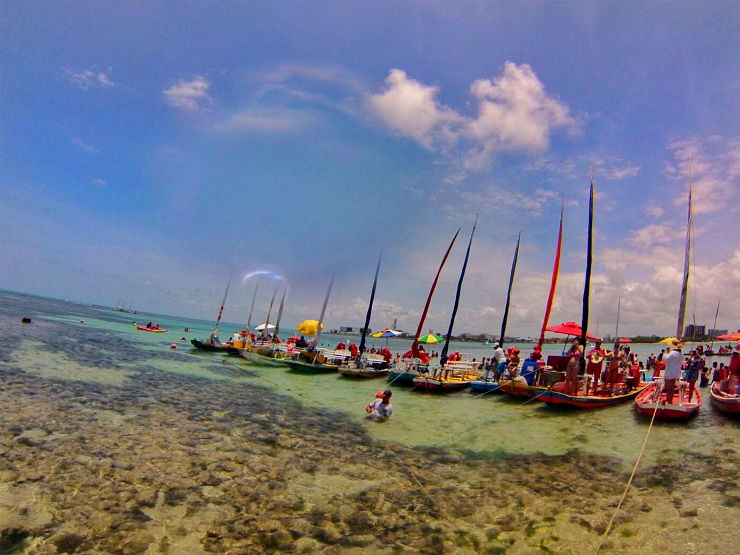
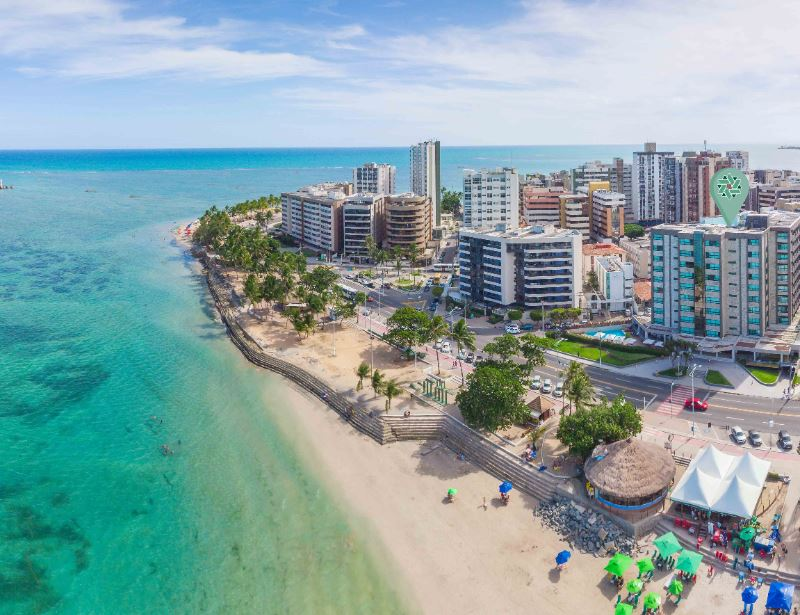
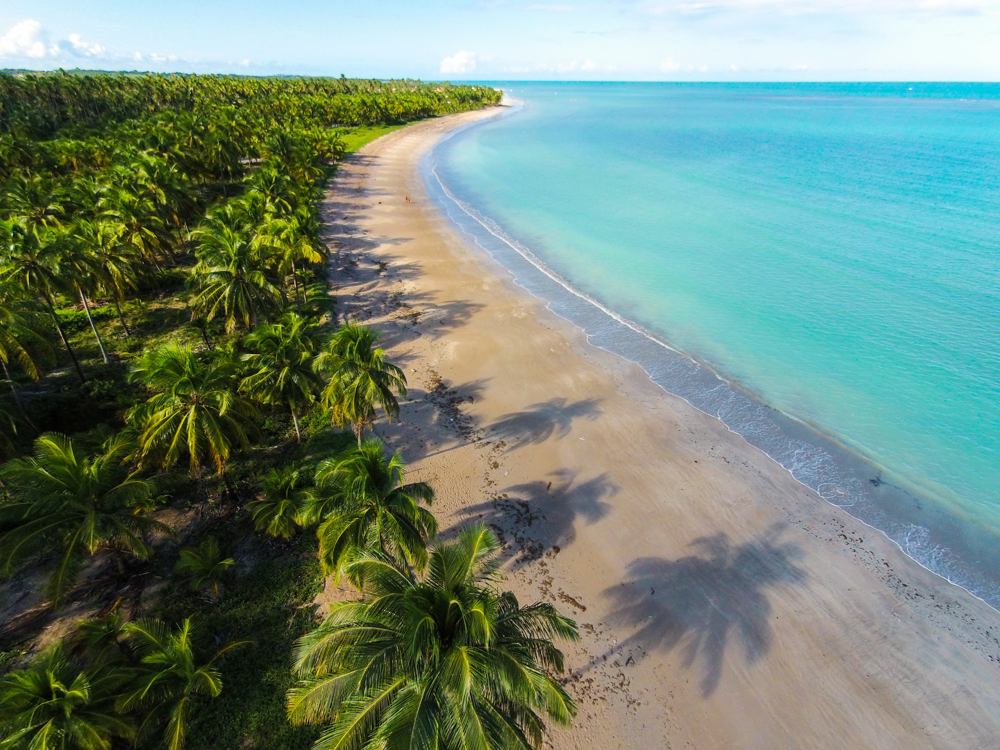
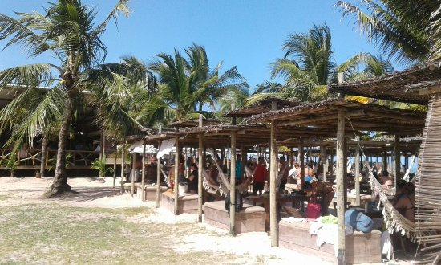

É uma das mais famosas de Maceió, por conta do passeio até as piscinas naturais.

Para fazer o passeio até as piscinas naturais, vale conversar com os jangadeiros para perguntar o melhor horário, de acordo com tábua das marés. Consulte e negocie os preços, mas não é preciso reservar nada com antecedência. Chegando no dia mesmo, é possível encontrar ampla oferta de jangadeiros na praia.
Praia de Ponta Verde

Caminhando a partir da Praia de Pajuçara, é possível chegar na Praia de Ponta Verde, essa praia tem uma ótima estrutura. Vale super a pena ir para Ponta Verde aos domingos. Apesar do movimento, a praia fica fechada para carros e todo mundo ocupa as calçadas, criando um delicioso parque à beira-mar.
Praia de Ipioca

Essa praia fica na direção do Litoral Norte, com locais intocados!

Contudo lá encontramos o Hibisco Beach Club que contem uma estrutura mais confortável